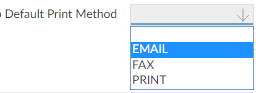
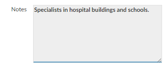
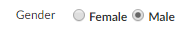
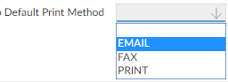
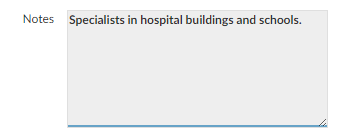
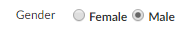

Allows you to enter several lines of text.
Use Ctrl+Return to start a new line (or, if the text box has a thicker left border, use Return).



There are several different types of fields:
| Field type | Usage | Example |
|---|---|---|
| Multi-Select |
Allows you to select one or more options from a list. |
|
| Drop Down | Allows you to select an option from a list. |
 |
| Text Box |
Allows you to enter several lines of text. Use Ctrl+Return to start a new line (or, if the text box has a thicker left border, use Return). |
 |
| Radio Button | Allows you to select one item from a number of options. |
 |
| Lookup | Allows you to choose a record that has previously been entered in |
|
| If a field has a blue background, this means the field is mandatory; you will not be able to save the record if you leave a mandatory field blank. |

|
If you want to move to the next field in the sequence, press the Return key.
To go backwards through the fields, press Shift+Return. Both of these options move from one tab page to the next automatically.
To go to the next block of fields or the next tab, press Ctrl+Shift+Return.
If you press Return (or Ctrl+Shift+Return) on the last field in the page, that page is submitted.